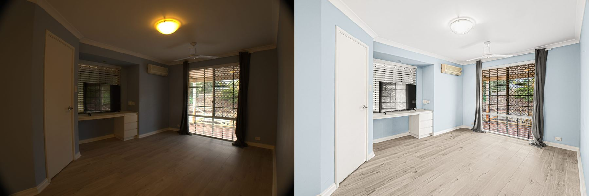
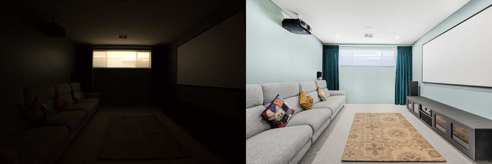
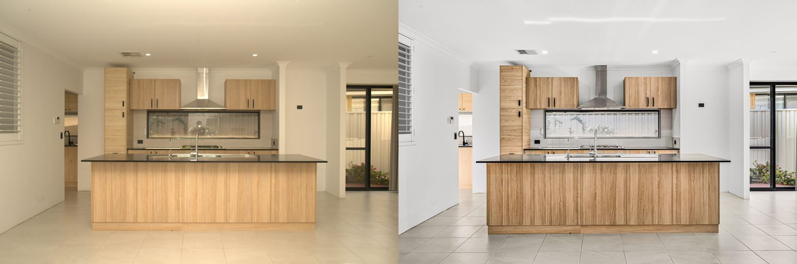

3 job(s) · 3 item(s) · Baker Production QC
No flash frames, and a ceiling light left on
All 51 groups are 5-frame ambient brackets with no flash frame (A7S III, ISO 500), so the 0EV raws are very dark indoors (living room brightest whites ~2.6–2.9 stops under). In the main bedroom the warm ceiling light was left on, mixing tungsten with daylight. Add one flash frame per room and switch off warm ceiling lights unless they're a feature.

Flash barely fired — frame almost black
Only the theatre room has a flash frame (DSC04234) and it sits 4.8 stops under clipping, so it adds nothing to the edit. The other rooms have no flash frame at all, and bracket groups run 3 to 10 frames. Raise flash power (or bounce off the ceiling closer) until the brightest whites are about 1 stop under, and keep one consistent bracket + flash per room.

Flash too weak and only used once
One flash frame in the whole job (kitchen DSC07682) and it is 2.7 stops under clipping; other rooms are ambient only, with groups of 4 to 12 frames. One flash frame per room at about 1 stop under clipping will give the editor clean colour to work from.
